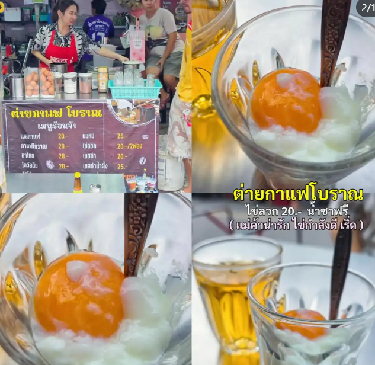

อาหารและของฝาก
แวะชิมอาหารพื้นถิ่นและเลือกซื้อของฝากจากชุมชน
สัมผัสเสน่ห์ของกินเมืองประจวบคีรีขันธ์
อาหารพื้นถิ่น

ตลาดของฝากและอาหารแห้ง
แวะชมร้านจำหน่ายอาหารแห้งและของฝาก ที่มีสินค้าหลากหลายให้เลือกซื้อ ทั้งปลาแห้ง อาหารทะเลแปรรูป ขนมขบเคี้ยว และผลิตภัณฑ์จากชุมชน
เหมาะสำหรับนักท่องเที่ยวที่ต้องการเลือกซื้อ ของฝากกลับบ้าน หรือแวะซื้ออาหารติดไม้ติดมือ ระหว่างเดินทางท่องเที่ยว
อาหารทะเลแห้ง ขนม และของฝากจากชุมชน

ต่ายกาแฟโบราณ
ร้านกาแฟโบราณที่เหมาะสำหรับแวะพัก ระหว่างเดินเที่ยวหรือเริ่มต้นวันใหม่ มีเครื่องดื่มและเมนูอาหารเช้าให้เลือก เช่น กาแฟโบราณ ชา และไข่ลวก
เมนูไข่ลวกสามารถรับประทานคู่กับเครื่องดื่ม เป็นอาหารเช้าง่าย ๆ ก่อนออกไปเที่ยว สถานที่ต่าง ๆ ในจังหวัดประจวบคีรีขันธ์
กาแฟโบราณ ไข่ลวก และเครื่องดื่มต่าง ๆ
ของฝากจากชุมชน
เลือกซื้อของฝากกลับบ้าน
จังหวัดประจวบคีรีขันธ์มีผลิตภัณฑ์ท้องถิ่น ให้เลือกซื้อเป็นของฝากมากมาย โดยเฉพาะอาหารทะเลแปรรูปและขนมจากชุมชน
นักท่องเที่ยวสามารถแวะเลือกซื้อสินค้า จากร้านค้าท้องถิ่นและตลาดชุมชน เพื่อสนับสนุนผู้ประกอบการในพื้นที่
เที่ยวต่อให้สนุก
อิ่มอร่อยกับอาหารพื้นถิ่นแล้ว อย่าลืมแวะชมสถานที่ท่องเที่ยวที่น่าสนใจ ของจังหวัดประจวบคีรีขันธ์
กลับไปดูแหล่งท่องเที่ยว